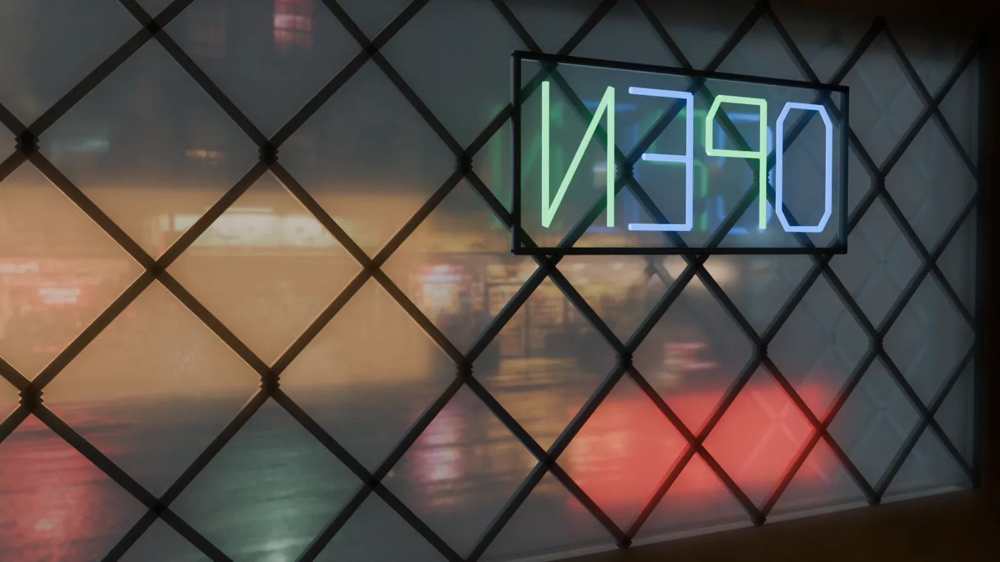
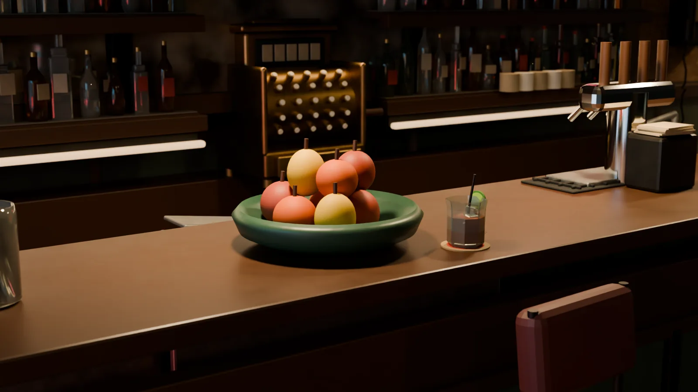
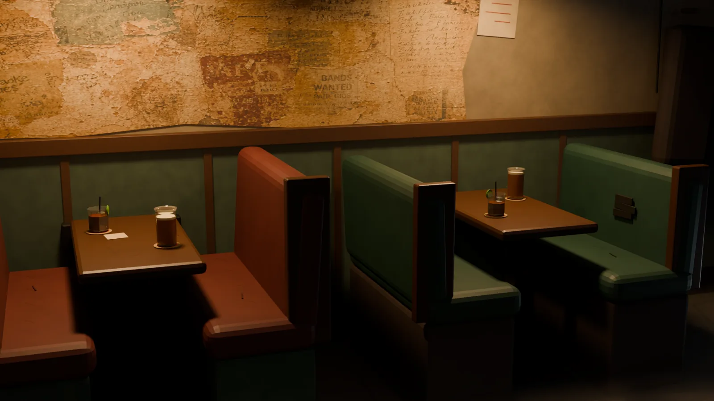
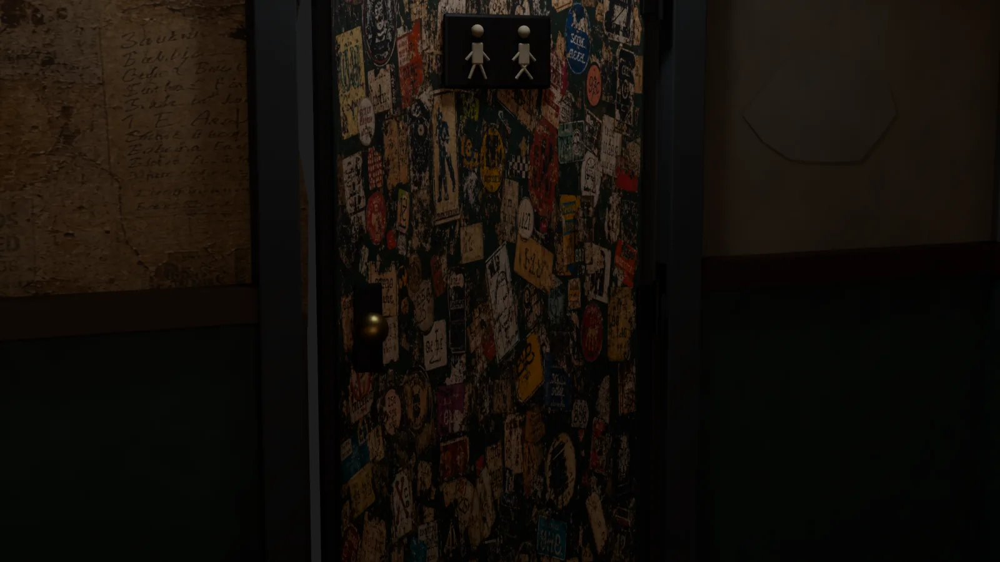

We built a bar
that doesn’t exist.Then broke a rack in it.
Audio description and film transcript
Open the audio-described film (MP4, 23 MB). The original collision audio remains underneath concise spoken descriptions of every shot.
- 0:00–0:05 — Inside the dark bar, the camera looks through a diamond-latticed window at wet Lower East Side storefronts and a backwards neon OPEN sign. Quiet room tone plays.
- 0:05–0:10 — The camera glides along rows of bottles, an old register, and fluorescent sections that stop on either side of it.
- 0:10–0:14 — A low view passes a foamy pint, condensation on the glass, and a rocks cocktail resting on its coaster.
- 0:14–0:19 — The view crosses the room and lowers past the three-shade fixture toward green cloth, a cue ball, and fifteen tightly racked balls.
- 0:19–0:23 — The cue strikes. Balls scatter with rapid clacks; the 7 ball and then the 4 ball fall into the southeast corner pocket.
- 0:23–0:27 — The camera follows the 13 ball, the last one moving, until its final rail contacts fade and it stops.
- 0:27–0:30 — The camera rises and pulls back over the settled table, booths, bar, overhead fixture, and lit storefront. Quiet room tone remains.
What you’re looking at
Every object in this room was made from scratch. The bar, the booths, the register, the 213 bottles behind it. No cameras, no photos, no stock.
The balls are not keyframed. A physics simulation worked out where they go, and every sound sits on a simulated collision. This is a showroom build, not a client space, client result, or real-world promise.
2,229
Objects in the frozen environment
90
Authored materials
15/15
Physics contracts passing
216/216
Playback parity checks
0.069°
Worst orientation error, any frame
90
Breaks simulated to choose one
The room
It had to look like
somebody drinks here.
Rooms read as real through small things. Every light has a fixture you can point at. Nothing floats. It’s worn, not dirty. We checked all 1,127 objects for whether something actually holds them up.











The break
Not animated.
Solved.
Tell the physics where the cue ball sits, how hard it’s hit and where the tip lands, and it works out the rest: 248 collisions over 7.8 seconds. We didn’t place a single one.
Then we checked it. 216 tests confirm what you see matches the physics on every frame, to within a fifteenth of a degree.
We simulated 90 different breaks and threw out 26 — scratches, weak racks, balls left blocking a pocket. This is the best of the 64 that were legal.


11.6m/s
Cue ball at impact
248
Solver events in one break
31
Rail contacts before it settles
2
Balls down — the 4 and the 7
7.81s
Until nothing is moving
240Hz
Trajectory sample rate
The sound
Every sound sits
on a real hit.
Nothing was timed by ear. Each clack is placed on the collision that caused it, and how hard it lands comes from how fast the balls were actually moving.
In the first fiftieth of a second, 99 balls hit each other. That pile-up is the sound of a break.
What this means for you
If it doesn’t exist yet,
we can still show it.
A space you have not built. A product you have not manufactured. A machine that would be dangerous to film. We can make an illustrative study to test how an idea may look or move. It is not a construction, product, or performance guarantee.
Spaces before they’re built
Explore an illustrative room, bar, storefront, or stage before deciding how to present the idea.
Products before they’re made
Illustrative materials under staged light, from many angles, without calling it a product photo.
Things that actually behave
Motion driven by a simulation, not hand-timed animation. It is still a display study, not a real-world guarantee.